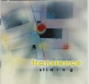

Home Artist links Label link

| Artist: | Transience |
| Title: | Sliding |
| Label: | Cyclops CYCL 084 |
| Length(s): | 66 minutes |
| Year(s) of release: | 1999 |
| Month of review: | 01/2000 |
Line up
Fred Hunter - keyboards, bass, drums and effects
Jeff McFarland - vocals, guitar
Francisco Neto - acoustic guitar
Steve Ades - saxophone
Mark Lavallee - some drums
Tracks
| 1) | At Squaw Peak | 7.56
|
| 2) | Sliding | 4.19
|
| 3) | Desert Falls | 12.59
|
| 4) | LA Post | 4.59
|
| 5) | Captiva Island | 5.43
|
| 6) | Utah Revisited | 8.28
|
| 7) | The Seven Pools | 19.05
|
| 8) | Stanley Park | 3.00
|
Summary
As you might have seen from the line-up this is almost Lands End and this
reveals a comparison with Xen which was more or less Enchant. Remains to
discover how much this band differs from Lands End.
The music
At Squaw Peak opens the album and the style is immediately reminiscent of
Lands End. Longstretched pieces of music, repeated melodies with lots of
synth/organ. Then comes a very spare part with guitar and the vocals start.
McFarland still has the somewhat nasal, subdued sound, that some may find
boring. The vocal melody is quite subtle. After the vocal part the keyboards
set in again with slow percussion. The sound of the keys is rather loud and
not too melodic. After a repetition of the chorus, the guitar really lets it
rip in a somewhat chaotic solo. We continue right into the title track Sliding.
Lots of synth here at its beginning, but then percussion sets in. The addition
of spaceous acoustic guitar with the percussion gives it an air of world
music. The acoustic guitar is rather quickish, but the music is still quite
melodious through the use of keyboards. Desert Falls is the first of the ten
plus minute tracks. Slow, ponderous melodic music with the depressing,
emotional vocals of McFarland. The climax seems to come quite early in this
track, before the six minutes with some nice guitar work. Then the song winds
down a bit with some relaxed meandering saxophone on a jazzy drum and
accompanied by a jazzy piano and a low bass. A bit too freewheeling I think.
LA Post was not written by Hunter but by McFarland. A bit of a singersongwriter
song where the vocals of McFarland sound quite 'ordinary'. Sounds a bit too
simple to me and the melody is not that good either. The song does win in
intensity because of the organ and the louder vocals. Captiva Island is
totally different: quiet synths in the back, a meandering saxophone and
echoed vocals figure on the minimal opening of this piece. Fragile. Then the
music becomes triumphant, something that can hardly ever be heard in the music
of Lands End. Still, the music has something of the band in it. Then the
guitar (played again by Neto) lets rip again in a melodic solo. Positively
optimistic. Utah Revisited is a McFarland Hunter collaboration. The melody
does not have much appeal for me and the song just tends to wander around a bit
and never comes to fruition. Maybe however this was what the musicians meant
to say. As always I get a strong impression of long empty stretches. The
longest piece on the album is the nineteen minute long The Seven Pools.
This mainstay of this piece is in the style of Terra Surranum, but with
some good, clear guitar work by Kiko. After eight minutes or so, the music
starts over very shyly after which the melodic vocals start. The melodies sound
a bit familiar sometimes owing to earlier Lands End work. Strange in this
piece is the off-beat passage on keyboards. For the most part however it is
quite alike to Lands End. The last, short piece is Stanley Park ending the
album on an optimistic, mellow note.
Conclusion
Much of the music on this album is like the music of Lands End. This is not
just due to the fact that the singer McFarland has such a typical voice, but
also melodically and stilistically the music often comes close. However, the
music on this album is more varied, from the singersongwriter style of LA Post
to the mellow and melodic Stanley Park, in this way also adding to Lands End
heritage. If you'd ask me what do you like better, I think I would still
choose for Lands End, as on their Natural Selection. Melodically and
emotionally this album seems more interesting and appealing, notwithstanding
songs like Desert Falls and Captiva Island.
© Jurriaan Hage